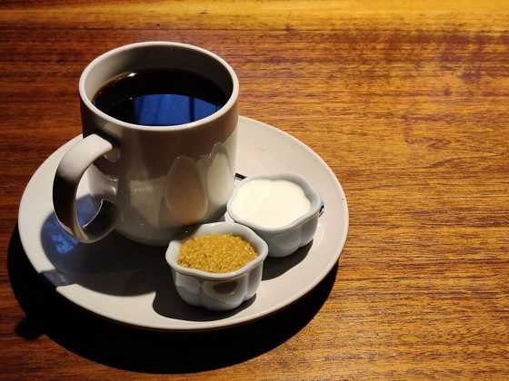
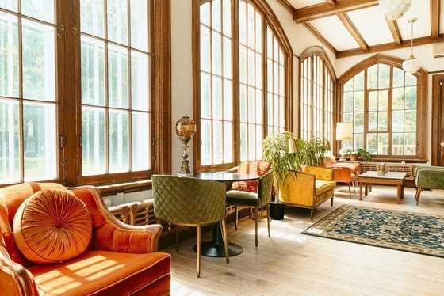
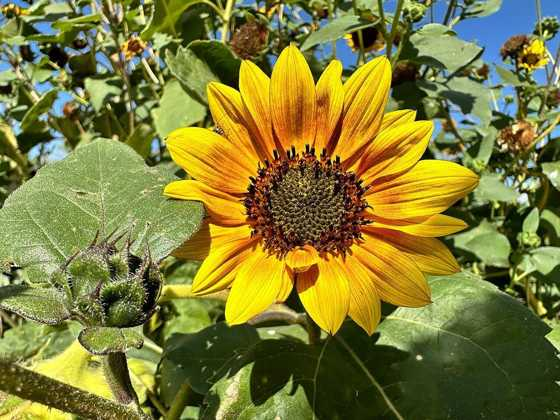
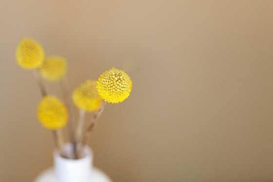
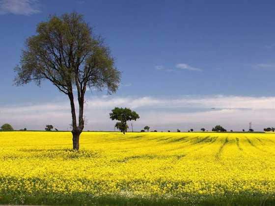

カナリヤコーヒー
Let's get nice caffeine ― 焙煎したてのコーヒーで、今日をひとつ軽やかに。
Let's get nice caffeine ― 焙煎したてのコーヒーで、今日をひとつ軽やかに。
カナリヤコーヒーは、鳥取県境港市上道町にあるコーヒーロースター。Instagramのプロフィールでは「コーヒーロースター」と名乗り、「Let's get nice caffeine ; )」という言葉を掲げています。
店内でのお飲み物と、テイクアウトの両方に対応していると紹介されています。
店名「カナリヤ」の由来は確認できていません。このページでは、黄色い小鳥のように明るく軽やかな一杯、という制作側のイメージで配色を決めています。


自家焙煎のコーヒーを、店内またはテイクアウトで。豆の種類・メニュー・価格・営業時間・定休日は確認でき次第お知らせします。




焙煎の香りに誘われて入りました。仕事帰りにテイクアウトするのが楽しみです。
すっきり飲みやすい一杯で、朝の気分が切り替わります。
豆を選んで持ち帰れるのがうれしい。家でも同じ香りを楽しんでいます。
※上記は制作用に作成したイメージ例であり、実際のお客様の声ではありません。
〒684-0033 鳥取県境港市上道町3256
Instagram: @canarya_coffee



掲載写真はフリー素材のイメージで、店舗の実際の様子ではありません。実際の写真は店舗ご提供のものに差し替えます。